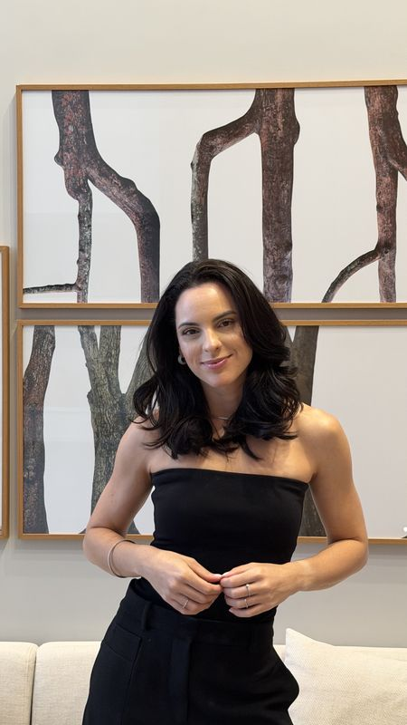

4sessões
Plano Mensal
Para organizar o que você está vivendo, entender o padrão por trás disso e dar os primeiros passos com direção.
Pagamento mensal recorrente, em data fixa combinada.
Assista antes de agendar. O vídeo não carregou? Abrir no YouTube
Terapia online em Terapia Cognitivo-Comportamental para decidir o que fazer com uma relação longa, ou reconstruir a vida depois dela. Começando pela relação com você.
Depois de anos ao lado de alguém, a rotina, os planos e até a forma de se enxergar se organizam em torno da relação. Quando ela esfria ou termina, o que se desfaz não é só o casal.
“Antes de decidir sobre a relação, é preciso saber quem você é hoje.”
Você não sabe se fica por amor, hábito ou medo, e a decisão parece impossível.
Terminou, e o que você gosta, quer e escolhe ficou misturado com a vida a dois.
Carreira e rotina em ordem, e a sensação de que não sobrou espaço para você.
É comum. Sem objetivo e sem leitura do padrão, o mesmo assunto volta toda semana. Estes relatos são de quem chegou com essa dúvida.
Relatos publicados com autorização dos pacientes. Toque em um para ampliar.
Agendar minha sessão
Sou psicóloga clínica há mais de 6 anos e atendo com Terapia Cognitivo-Comportamental: uma abordagem prática, com base em evidência e orientada para mudança.
Eu vivi o fim de um relacionamento longo. O que mais me afetou não foi a separação em si, foi descobrir que eu não sabia mais quem eu era fora dela. Reconstruir isso foi o que me trouxe para este trabalho.
Hoje, ajudo você a entender o padrão por trás da dúvida ou da dor e a decidir com clareza, sem se abandonar no processo.
Todos com sessões semanais de 50 minutos pelo Google Meet, plano terapêutico com objetivos definidos e exercícios práticos entre as sessões.
Para organizar o que você está vivendo, entender o padrão por trás disso e dar os primeiros passos com direção.
Para aprofundar o trabalho com crenças e comportamentos e consolidar novas formas de se posicionar.
Para atravessar uma decisão ou um recomeço com acompanhamento consistente ao longo de seis meses.
Os valores são informados no atendimento.
Escolha o dia e o horário na agenda desta página.
Leitura clínica da sua queixa e dos padrões envolvidos.
Definimos juntos o objetivo e o plano que faz sentido para você.
Encontros semanais, exercícios entre as sessões e revisão ao fim de cada ciclo.
Ainda com dúvida se a terapia é o caminho? A reunião estratégica dura 20 minutos, é sem custo e acontece pelo Google Meet, uma plataforma segura e confiável. Fica fora dos planos e não gera compromisso.
Agendar reunião estratégicaA confirmação chega por e-mail e a sessão acontece pelo Google Meet, uma plataforma segura e confiável.
A agenda não carregou? Abrir agenda em nova aba. Prefere tirar uma dúvida antes? Falar pelo WhatsApp.
As sessões acontecem pelo Google Meet, uma plataforma segura e confiável. Peço que você esteja em um lugar seguro, confortável e privativo, para que possamos conversar sem interrupções, com fone de ouvido e uma conexão de internet estável.
Uma leitura clínica do seu momento: a queixa central, a história e os padrões de pensamento e comportamento envolvidos. A partir dela, definimos juntos o objetivo do trabalho e o plano que faz mais sentido para você.
É uma conversa breve, sem custo, para quem ainda está em dúvida se a terapia é o caminho ou qual formato escolher. Acontece pelo Google Meet, uma plataforma segura e confiável, fica fora dos planos e não gera compromisso.
Não. A decisão é sua. O trabalho é enxergar com clareza o que mantém você na relação, o que você quer hoje e o que cada caminho significa, para que a escolha não seja feita pelo medo ou pelo hábito.
A Terapia Cognitivo-Comportamental trabalha com objetivos definidos e com a identificação clara dos padrões que se repetem. Você sabe o que está sendo trabalhado e por quê, em cada etapa.
No Plano Mensal, o pagamento é recorrente, todo mês, em uma data fixa combinada. Nos planos Bimestral e Semestral, o pagamento é feito integralmente no início do ciclo. Os valores são informados no atendimento.
Sim. O sigilo é um dever ético da psicologia, previsto no Código de Ética Profissional do Psicólogo.
Não. O atendimento é individual. O foco é você: o que escolhe, o que tolera, como reage e como se posiciona nas suas relações.
Pronto para dar o primeiro passo?
Agendar minha sessãoReflexões diretas sobre relações, decisões e reconstrução. @luanagnunes.psi
Escolha um horário e comece pela primeira sessão.
Agendar minha sessão